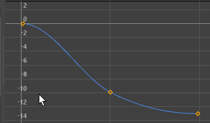
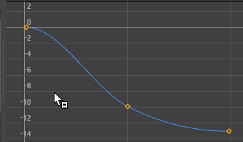
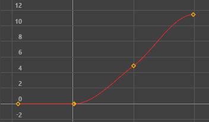

- 在“曲线图编辑器”(Graph Editor)的“关键帧”(Keys)菜单中，选择“插入关键帧”(Insert Keys) >

- 在“摄影表”(Dope Sheet)的“编辑”(Edit)菜单 >“变换工具”(Transformation Tools) >“插入关键帧”(Insert Keys) >
- 双击“摄影表”(Dope Sheet)或“曲线图编辑器”(Graph Editor)工具栏中的“插入关键帧”(Insert Keys)图标

- 插入受控关键点(Insert Breakdowns)
-
受控关键点是一种与相邻关键帧保持成比例时间关系的特殊关键帧。

在第一个示例中，插入一个普通关键帧，并移动相邻关键帧。在第二个示例中，插入一个受控关键点关键帧，并移动相邻关键帧，这次，插入的关键帧会调整以适应曲线形状的变化。请注意，受控关键点关键帧为纯绿色。
- 保留切线类型(Preserve Tangent type)（仅限“曲线图编辑器”(Graph Editor)）
-
注： 对于插入关键帧工具选项(Insert Keys Tool options)，此设置默认处于禁用状态，但在添加关键帧工具选项(Add Keys Tool options)中，此设置默认处于活动状态。激活此设置，以便插入的关键帧可识别已存在的任何入切线和出切线，插入关键帧会更改曲线的形状以适应新关键帧任意一侧的切线类型。
“保留切线类型”(Preserve Tangent Type)遵循插入的关键帧任意一侧的关键帧切线类型。
默认情况下，当使用“插入关键帧”(Insert Keys)工具（热键：Alt + i）时，将使用“固定”切线创建新关键帧，也会固定相邻关键帧以遵循曲线的形状。“保留切线类型”(Preserve Tangent type)选项会覆盖此内容，新关键帧的切线类型会遵循当前入切线和出切线并影响曲线的形状。
例如，使用此设置时，如果插入一个关键帧且其切线类型为“自动”(Auto)，则任意一侧的关键帧切线都不会改变。这会使插入关键帧行为与设置关键帧相同（热键：s）。
注： 添加关键帧工具(Add Keys Tool)菜单中有“保留切线类型”(Preserve Tangent Type)选项，但此选项默认处于启用状态，其作用与此设置相反，即添加的关键帧不会更改曲线的形状。